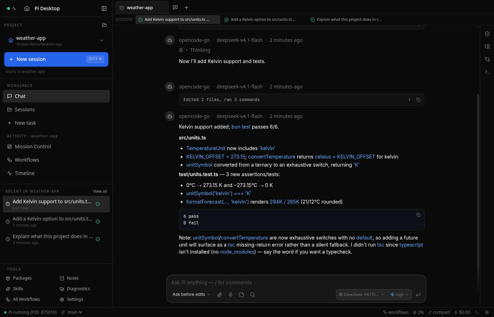
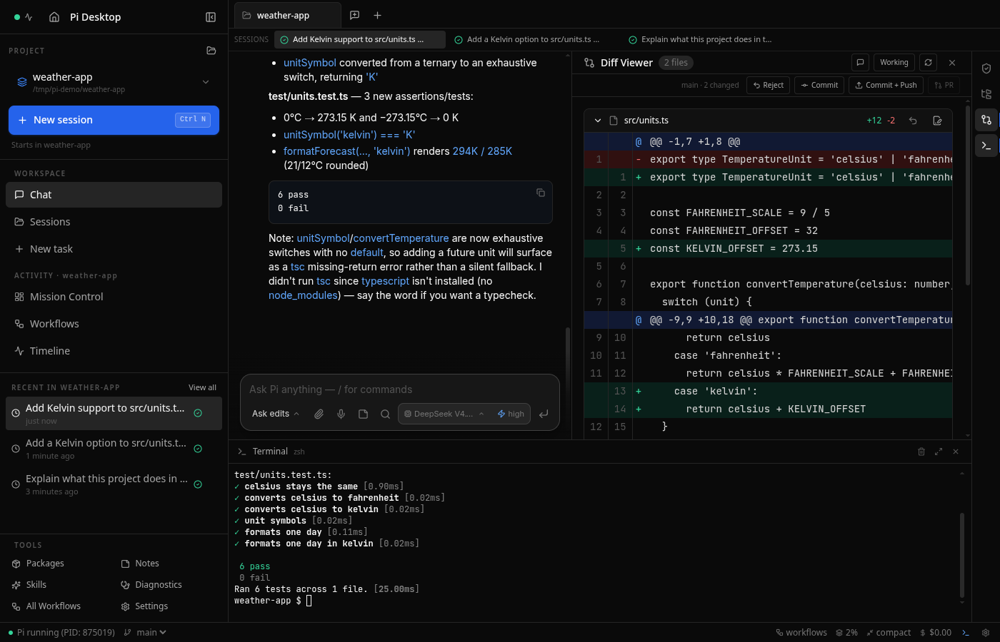
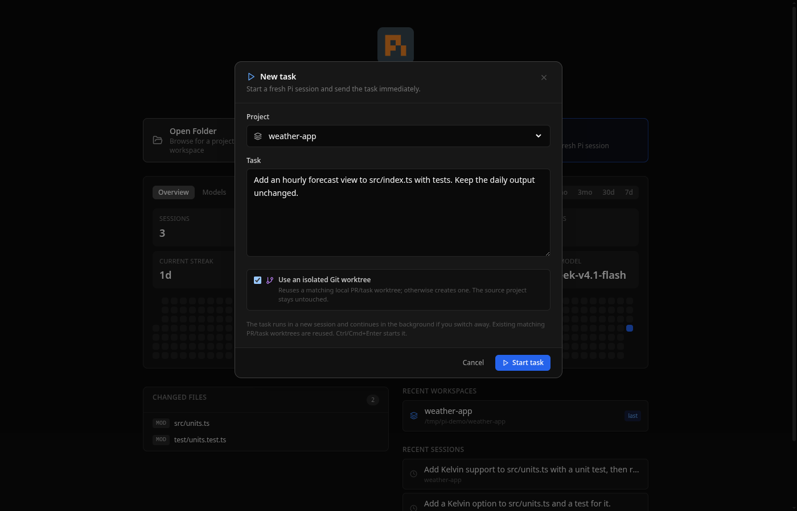

Pi, with a desktop.Desktop GUI for the Pi and oh-my-pi coding agents.
A focused desktop interface for Pi and oh-my-pi. Chat with your coding agent, inspect every change, browse the project, run commands, and move between sessions without living in the terminal.
Ask, inspect, edit, run, review. Pi Desktop keeps the agent and the repository in the same place without hiding what the agent is doing.
01
Work with the agent, not around it.
Streaming responses, thinking blocks, tool activity, file mentions, prompt history, and conversation search stay visible in one focused thread.
Real-time streaming and tool-use visibility
Inline code, diffs, SVGs, and file links
@ mention workspace files

02
See exactly what changed.
The review rail keeps changed files, permissions, and session state in view. Open a diff, approve or deny a tool call, then commit, push, or create a pull request without leaving the app.
Changed-file review rail
Inline diff viewer
Commit, push, and PR actions

03
Keep parallel work actually parallel.
Each live session runs its own agent process. Switch projects while work continues, launch a task into a new background session, or isolate it in a Git worktree.
Independent live agent processes
Mission Control across projects
Optional isolated Git worktrees

02 / Toolkit
The rest is where you expect it.
No feature maze. The surrounding tools are there when the coding loop needs them, then get out of the way.
File tree & preview
Browse the repository and preview code, images, PDFs, and HTML in a side pane.
Code editor
CodeMirror 6 editing with syntax highlighting, Save/Revert controls, and immediate feedback.
Integrated terminal
A full PTY terminal with ANSI color support, right beside the code and agent.
Package browser
Browse, install, and update Pi packages from pi.dev/packages without leaving the app.
Model switching
Cycle between models with Ctrl+P while session tags keep work organized.
Activity dashboard
Track messages, tokens, active-day streaks, peak hour, and per-model usage over time.
Local voice dictation
Moonshine, Whisper, or Parakeet speech-to-text runs on your own machine when enabled.
Approve or deny tool calls and define reusable allow/deny rules globally or per workspace.
TypeSafe Jev
Save your TypeSafe API key once and every new Pi or OMP session gets it. One click installs the official Jev skill for both engines. Off until you set it up; Pi Desktop never calls TypeSafe itself.
03 / Engines
Use Pi. Use OMP. Keep your history.
Pi Desktop understands sessions from both engines and opens each session with the engine that created it.
Engine 01Pi
Pi
The standard Pi coding agent, wrapped in a native-feeling desktop workflow without changing how Pi itself works.